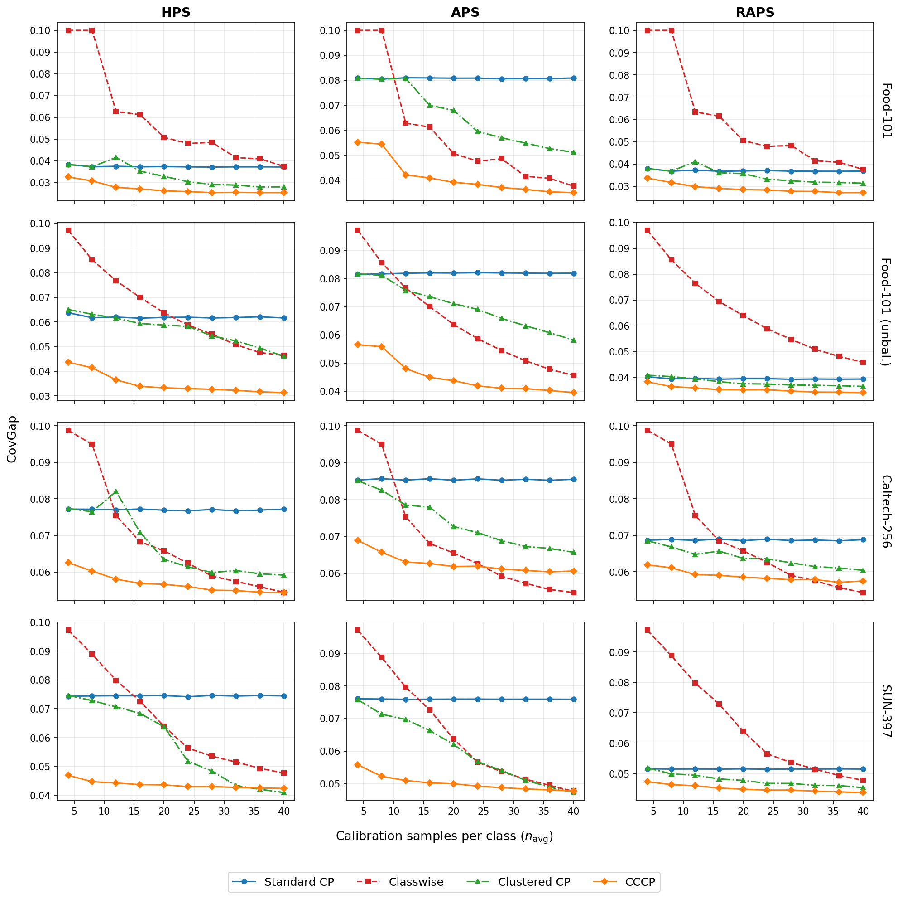

In classification, standard conformal prediction guarantees that prediction sets cover the true label with a chosen probability overall, but the coverage of individual classes is not guaranteed. Classwise conformal prediction guarantees coverage for each class by calibrating a separate threshold for each, but these thresholds can be unstable when few calibration examples are available per class. Clustered conformal prediction pools similar classes into clusters to share calibration data, but must split its limited calibration budget between learning the clusters and computing thresholds. We propose cross-fitted clustered conformal prediction (CFCP), which learns the clusters from cross-fitted training scores, leaving the entire calibration set for threshold estimation. The cross-fitted models can also be reused as an ensemble predictor, improving predictive performance and reducing prediction-set size without additional model training. On three image-classification benchmarks (including a controlled unbalanced variant) with 101–397 classes, CFCP achieves the lowest class-conditional coverage gap among the evaluated methods across the calibration regimes considered.
CFCP separates cluster learning from threshold calibration by using a cross-fitting strategy on the training data:
Because the clustering step uses only training data, the entire calibration budget is preserved for threshold estimation. The K subfold models are reused as an ensemble (EnsCFCP), improving accuracy and shrinking prediction sets at no additional training cost.
CFCP achieves the lowest coverage gap (CovGap) across all datasets and score functions, with the advantage being most pronounced in low-calibration regimes:

| Dataset | Score | Method | CovGap (n̄=10) | CovGap (n̄=30) |
|---|---|---|---|---|
| Food-101 | HPS | Standard | .038 | .037 |
| Classwise | .066 | .042 | ||
| Clustered | .043 | .029 | ||
| CFCP | .029 | .026 | ||
| Food-101 (unbal.) | HPS | Standard | .063 | .062 |
| Classwise | .081 | .053 | ||
| Clustered | .063 | .054 | ||
| CFCP | .037 | .033 | ||
| Caltech-256 | HPS | Standard | .077 | .077 |
| Classwise | .087 | .058 | ||
| Clustered | .077 | .061 | ||
| CFCP | .059 | .055 | ||
| SUN-397 | HPS | Standard | .073 | .073 |
| Classwise | .085 | .052 | ||
| Clustered | .072 | .046 | ||
| CFCP | .044 | .043 |